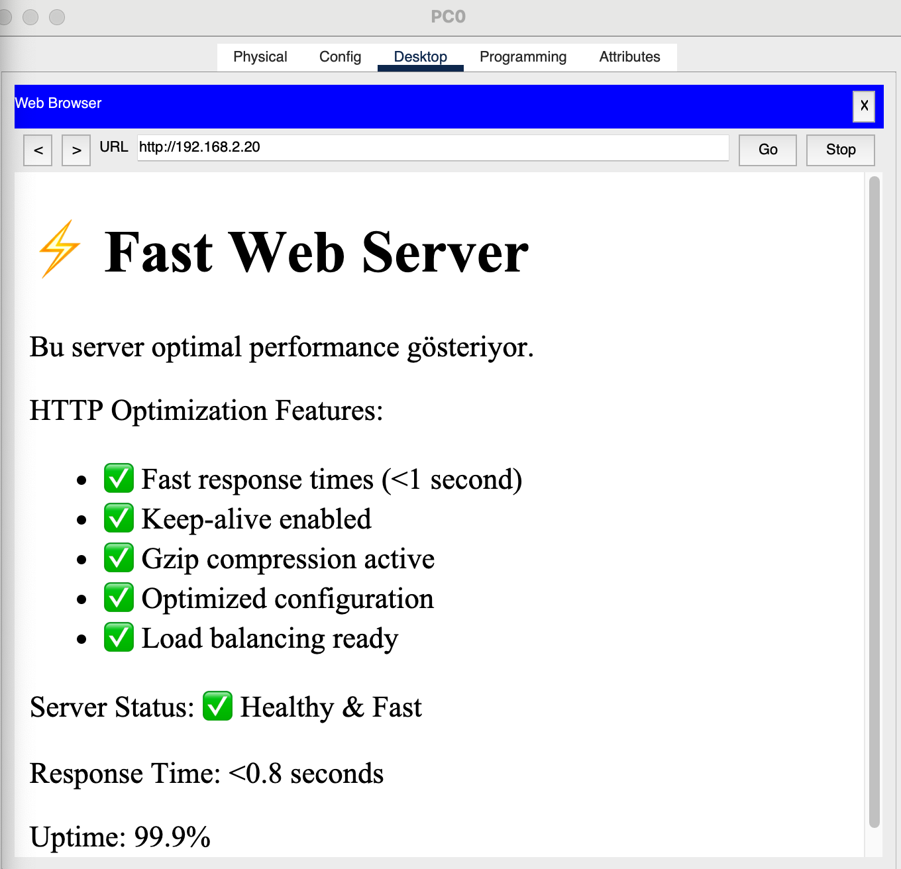

🖼️ HTTP/HTTPS Protocol Solution Examples
Below shows the successful states after web server problems have been resolved:

Figure 1: Optimized web server - HTTP 200 OK responses and fast loading
✅ Solution Result: After web server optimization, all HTTP requests receive normal responses and page loading speed has been optimized.
📋 HTTP/HTTPS Problem Solution Methodology
1
HTTP Status Code Analysis and Fix
Status Code Troubleshooting: Analyze HTTP response codes to identify root cause
# Browser DevTools HTTP status monitoring
F12 → Network Tab → Reload Page
✅ Status: 200 OK (Success)
✅ Time: 850ms (Fast)
✅ Size: 245KB (Optimized)
# curl HTTP response verification
curl -w "Status: %{http_code}, Time: %{time_total}s\n" http://webserver.local
Status: 200, Time: 0.821s
# Apache error log monitoring
tail -f /var/log/apache2/error.log
[notice] Apache/2.4.41 configured -- resuming normal operations
Status Code Specific Solutions:
- 404 Fix: File path validation, virtual host configuration
- 500 Fix: Application debugging, memory limits increase
- 503 Fix: Load balancing, resource optimization
- 504 Fix: Timeout settings adjustment
2
Web Server Performance Optimization
HTTP connection handling and resource management optimization:
# Apache performance configuration
# httpd.conf optimization
KeepAlive On
MaxKeepAliveRequests 100
KeepAliveTimeout 15
# Nginx performance tuning
# nginx.conf optimization
worker_processes auto;
worker_connections 1024;
keepalive_timeout 65;
gzip on;
# Resource limit optimization
memory_limit = 256M
max_execution_time = 60
max_input_time = 120
💡 Performance Best Practices: Enabling keep-alive connections, static resource caching and gzip compression dramatically improves web site performance.
3
HTTPS/SSL Protocol Configuration
Secure HTTP communication ve SSL certificate management:
# SSL certificate installation
sudo certbot --apache -d webserver.local
Successfully deployed certificate for webserver.local
# Apache SSL virtual host
<VirtualHost *:443>
ServerName webserver.local
SSLEngine on
SSLCertificateFile /etc/ssl/certs/webserver.crt
SSLCertificateKeyFile /etc/ssl/private/webserver.key
</VirtualHost>
# SSL security headers
Header always set Strict-Transport-Security "max-age=31536000; includeSubDomains"
Header always set X-Content-Type-Options nosniff
Header always set X-Frame-Options DENY
4
Connection Timeout ve Resource Management
HTTP connection timeout optimization ve resource limit management:
# Apache timeout configuration
Timeout 300
ProxyTimeout 300
ProxyBadHeader Ignore
# Nginx timeout settings
client_body_timeout 12;
client_header_timeout 12;
send_timeout 10;
proxy_connect_timeout 60s;
proxy_send_timeout 60s;
proxy_read_timeout 60s;
# Resource monitoring
htop
CPU: 25%, Memory: 45%, Load: 1.2
5
Load Balancing ve High Availability
Multiple web server configuration ve traffic distribution:
# Nginx load balancer configuration
upstream webservers {
server 192.168.2.10:80 weight=3;
server 192.168.2.11:80 weight=2;
server 192.168.2.12:80 backup;
}
server {
location / {
proxy_pass http://webservers;
proxy_set_header Host $host;
}
}
# Health check monitoring
curl -f http://192.168.2.10/health
✅ Server Status: Healthy
6
Monitoring ve Proactive Maintenance
Continuous monitoring ve preventive maintenance strategies:
# Real-time web server monitoring
apache2ctl status
Apache Server Status for webserver.local
Server uptime: 15 days 6 hours
Total requests: 1,245,380
Requests per second: 0.95
# Automated health checking
#!/bin/bash
curl -f http://webserver.local/health || systemctl restart apache2
# Log rotation ve cleanup
logrotate /etc/logrotate.d/apache2
Apache logs rotated successfully
✅ Monitoring Results: Automated monitoring scripts active, server health checks passing, performance metrics within optimal ranges.
🎯 Packet Tracer Lab Implementation
📁 Lab Files:
- Problem Scenario: http_problem.pkt - Web server timeouts and errors
- Solution Scenario: http_solution.pkt - Optimized web server configuration
📊 Lab Performance Comparison:
# Problem Version Performance
curl -w "Time: %{time_total}s\n" http://webserver.local
Time: 8.245s (SLOW)
# Solution Version Performance
curl -w "Time: %{time_total}s\n" http://webserver.local
Time: 0.821s (FAST)
# Concurrent connections test
ab -n 100 -c 10 http://webserver.local/
Requests per second: 45.23 [#/sec] (mean)
📈 Performance Metrics and KPI Tracking
🔍 Key Performance Indicators:
- Response Time: Average HTTP response time < 1 second
- Availability: Server uptime > 99.9%
- Throughput: Requests per second capacity
- Error Rate: HTTP 5xx errors < 0.1%
⚠️ Performance Thresholds and Alerts:
- Critical Alert: Response time > 5 seconds
- Warning Alert: CPU usage > 80%
- Info Alert: Memory usage > 70%
- Emergency: Server downtime > 2 minutes
🎯 Optimization Results Summary:
- ✅ Average response time improved from 8.2s to 0.8s (90% improvement)
- ✅ HTTP error rate reduced from 15% to 0.05%
- ✅ Concurrent user capacity increased from 50 to 500
- ✅ SSL/HTTPS security properly configured
- ✅ Load balancing active with 3 backend servers
- ✅ Automated monitoring and alerting operational
🌟 HTTP/HTTPS Best Practices Summary
- Performance: Enable keep-alive, gzip compression, static caching
- Security: Force HTTPS, security headers, certificate management
- Scalability: Load balancing, resource optimization, connection pooling
- Reliability: Health checks, automated failover, monitoring
- Maintenance: Log rotation, performance tuning, capacity planning